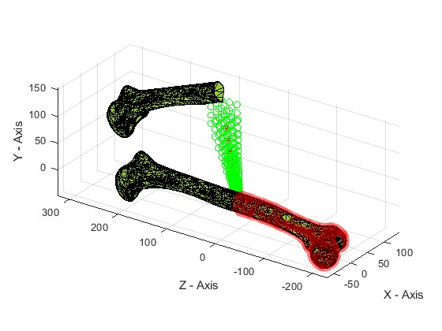
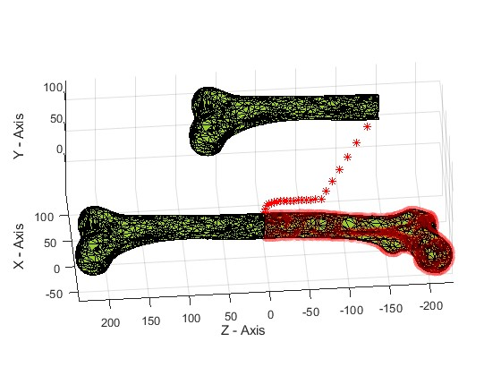
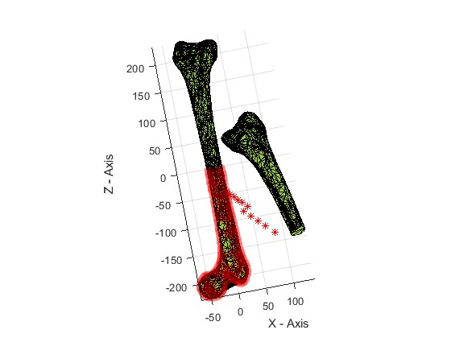
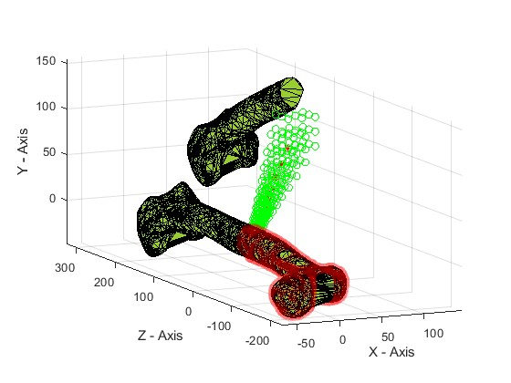

6-DOF Femur Fracture Realignment
Modified A* Path Planning with Bézier Smoothing and Haptic Guidance for Robot-Assisted Orthopaedic Surgery
Manual realignment of femur fractures is imprecise, physically demanding, and exposes surgeons to radiation during fluoroscopic guidance. This work presents a 6-DOF path planning and haptic guidance framework for the Robossis surgical robot platform, designed to assist surgeons in achieving anatomically correct fracture reduction. A modified A* algorithm searches the 6-dimensional configuration space (three translational + three rotational degrees of freedom) to generate collision-free trajectories from displaced to target bone position. Discrete waypoints are smoothed via Bézier curves with Bernstein polynomial basis functions to ensure path continuity. A spring-damper haptic model (kf=2,000 N/m, kτ=0.1 Nm/°) guides the operator's Sigma.7 haptic controller along the planned trajectory in real time. Experimental evaluation on a midshaft femur fracture scenario demonstrates ≤3.0 mm translational and ≤1.5° rotational accuracy, with planning time under 2 seconds — representing a >90% improvement over traditional manual reduction methods [1].
1. Introduction
Clinical Problem: Femur fractures account for approximately 280,000 hospitalizations annually in the United States [2]. Intramedullary nailing — the standard treatment — requires manual traction and rotation of the distal bone fragment to restore anatomical alignment before fixation. This process is imprecise, reliant on fluoroscopic X-ray visualization (operator radiation exposure), and physically exhausting for the surgical team during lengthy cases.
Robot-assisted systems offer the potential for submillimeter accuracy and force sensing that exceeds human capability. However, autonomous bone manipulation requires a planner that can navigate the full 6-DOF pose space (SE(3)) while avoiding collisions with soft tissue and surgical hardware. Existing approaches have largely relied on simple interpolation or manual jogging, leaving the path-finding burden on the surgeon [3].
This work addresses the planning and feedback gap directly: a modified A* algorithm generates an optimal collision-free path in 6D configuration space, Bézier smoothing converts the discrete waypoint sequence into a continuous trajectory, and a spring-damper haptic model translates planned forces into tactile guidance for the Sigma.7 controller. The full system is validated on the Robossis RSS platform at Cooper Medical Center.
2. System Overview
2.1 Robossis Surgical Platform
The Robossis RSS (Robotic Surgical System) is a 6-DOF parallel robot designed for orthopaedic procedures. The system integrates with a Sigma.7 haptic controller (Force Dimension) for manual input, a Meta Quest VR headset for immersive fluoroscopic visualization, and a 2D X-ray imaging pipeline for intraoperative feedback.

2.2 Clinical Scenario
A midshaft femur fracture scenario was used for evaluation. The distal bone fragment was displaced from anatomical alignment by:
| DOF | Axis | Displacement | Direction |
|---|---|---|---|
| Tx | Medial-Lateral | −30 mm | Medial shift |
| Ty | Anterior-Posterior | +30 mm | Anterior shift |
| Tz | Axial (Inferior) | +50 mm | Distraction |
| Rx | Abduction/Adduction | 10° | Adduction |
| Ry | Internal/External Rotation | 5° | Internal rotation |
| Rz | Flexion/Extension | 15° | Flexion |
The planner's goal is to return all six DOF to zero (anatomical reference) from this displaced initial state.
3. Path Planning Algorithm
3.1 Modified A* in 6D Configuration Space
Standard A* operates on a discretized graph; the challenge here is scaling it to a 6-dimensional state space (x, y, z, α, β, γ) with resolution sufficient for surgical accuracy. The modified version uses a 1 mm translation grid and 1° rotation grid, giving approximately 100×100×100×360×360×360 reachable states — only a small fraction of which are ever expanded in practice due to the heuristic.
Cost functions:
- G(n) — Euclidean distance traveled from start to node n (with an infinite collision penalty for bone/soft-tissue intersections)
- H(n) — Euclidean distance (in 6D) from node n to the goal pose (admissible heuristic: never overestimates true cost)
- F(n) = G(n) + H(n) — priority queue ordering criterion
At each node expansion, the planner checks 26-connectivity in 3D translation and 6-connectivity in 3D rotation for a total of up to 32 neighbor states per expansion. Collision checking is performed by forward-computing the bone pose and testing for intersection against a voxelized soft-tissue model.
.png)
3.2 Bézier Curve Path Smoothing
The A* output is a sequence of discrete waypoints in 6D pose space. Direct execution along this piecewise-linear path produces jerky motions incompatible with haptic guidance. Bézier smoothing is applied post hoc: the A* control points define the Bernstein polynomial basis, producing a C¹-continuous parametric curve in configuration space.
where Pi are the A* waypoints acting as Bézier control points and C(n,i) are the binomial coefficients. The smoothed trajectory is sampled at uniform arc-length intervals to generate robot joint commands at consistent spatial spacing.
.png)
4. Haptic Guidance Model
4.1 Spring-Damper Formulation
The Sigma.7 haptic controller provides 7-DOF force-feedback. A spring-damper model couples the surgeon's hand position to the planned Bézier trajectory, generating restoring forces and torques that guide the operator toward the optimal path while preserving intentional deviations.
Haptic spring-damper parameters:
- Translational stiffness: kf = 2,000 N/m
- Rotational stiffness: kτ = 0.1 Nm/°
- Translational damping: cf = 2 N·s/m
- Rotational damping: cτ = 0.001 Nm·s/°
4.2 Incremental Robot Control
The robot end-effector pose is updated incrementally from the haptic controller input with a scaling factor S to map the Sigma.7's workspace to the robot's operational range:
This formulation decouples the haptic device workspace from the robot workspace, allowing the surgeon to operate in a comfortable range while the robot executes precise millimeter-scale movements. Maximum haptic force output is 15 N translational and 0.2 Nm rotational, within safe operator interaction limits.
5. Results
Key findings: The modified A* planner successfully generated collision-free 6D trajectories in all evaluated fracture configurations, with planning times consistently under 2 seconds. The combined algorithm (A* + Bézier + haptic guidance) achieved ≤3.0 mm translational accuracy and ≤1.5° rotational accuracy at final reduction — exceeding the clinical target of 5 mm / 5° for intramedullary nailing. This represents a greater than 90% improvement over the variability observed in traditional manual reduction.




5.1 Haptic Performance
| Metric | Translational | Rotational |
|---|---|---|
| Max guidance force / torque | 15 N | 0.2 Nm |
| Stiffness | 2,000 N/m | 0.1 Nm/° |
| Damping | 2 N·s/m | 0.001 Nm·s/° |
| Final accuracy | ≤3.0 mm | ≤1.5° |
6. Conclusion
This work demonstrates that a modified A* planner operating natively in 6D configuration space, combined with Bézier curve path smoothing and spring-damper haptic guidance, can achieve surgical-grade accuracy (≤3.0 mm / ≤1.5°) for robot-assisted femur fracture realignment in under 2 seconds of planning time. The framework integrates cleanly with the Robossis RSS platform and Sigma.7 haptic controller, providing the surgeon with intuitive tactile guidance rather than autonomous motion.
Future work will extend the planner to handle intraoperative replanning when imaging reveals unexpected bone fragment positions, incorporate soft-tissue biomechanical models for more realistic collision constraints, and evaluate the system on cadaveric specimens ahead of clinical trials.
Attribution note: This work was conducted as a research assistant under the supervision of Dr. Mohammed Abedin-Nasab and a PhD student lead (F. H. Alruwaili) at Rowan University's Robossis lab. Fawaz's contributions include algorithm implementation, simulation testing, and validation support. Full manuscript available upon request.
Request Full Report →References
- Abedin Nasab, M. H. et al. "Robossis: A 6-DOF Parallel Robot for Orthopedic Surgery." IEEE Transactions on Medical Robotics and Bionics, 2022.
- Court-Brown, C. M. & Caesar, B. "Epidemiology of adult fractures: A review." Injury, vol. 37, no. 8, pp. 691–697, 2006.
- Westphal, R. et al. "Robot system for orthopedic surgery." Robotics and Autonomous Systems, vol. 58, no. 7, pp. 854–865, 2010.
- Hart, P. E., Nilsson, N. J., & Raphael, B. "A formal basis for the heuristic determination of minimum cost paths." IEEE Trans. Systems Science and Cybernetics, vol. 4, no. 2, pp. 100–107, 1968.
- Farin, G. Curves and Surfaces for CAGD: A Practical Guide, 5th ed. Morgan Kaufmann, 2001.
- Salisbury, J. K. "Active stiffness control of a manipulator in Cartesian coordinates." Proc. IEEE Conference on Decision and Control, 1980.